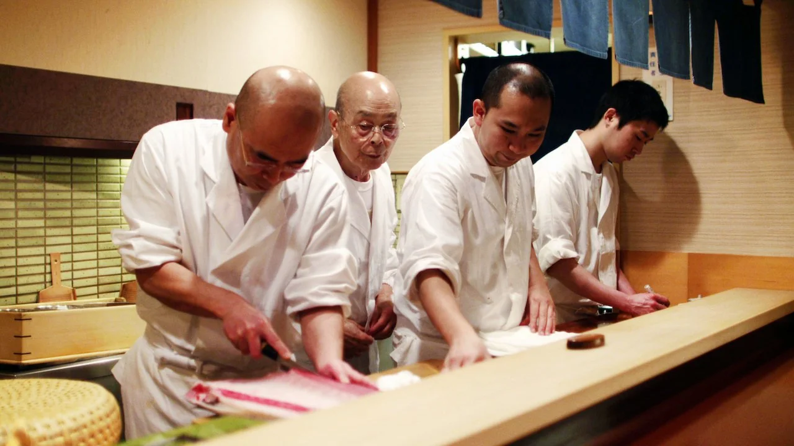

14h00
salle ébullition
16h30
Cinéma le prado
Jiro Ono est le propriétaire de Sukiyabashi Jiro, un restaurant de sushis situé dans une station de métro de Tokyo. Dix couverts. Rien que des sushis. On ne choisit pas. Il en sert vingt par tête, pour la somme de 30,000 yens. Pour y manger, il faut réserver plusieurs mois à l’avance. On n’a quand même pas trois étoiles au Michelin sans raison (cf L’Aile ou la Cuisse)!
David Gelb

2011
états-unis
documentaire
81 minute